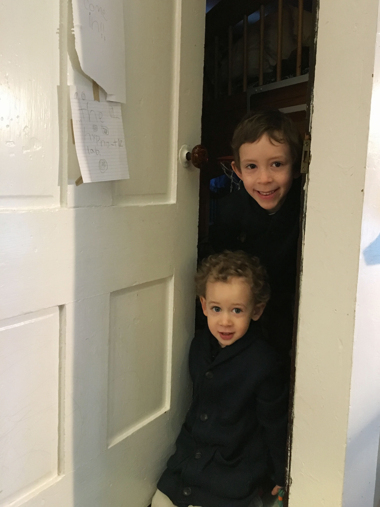
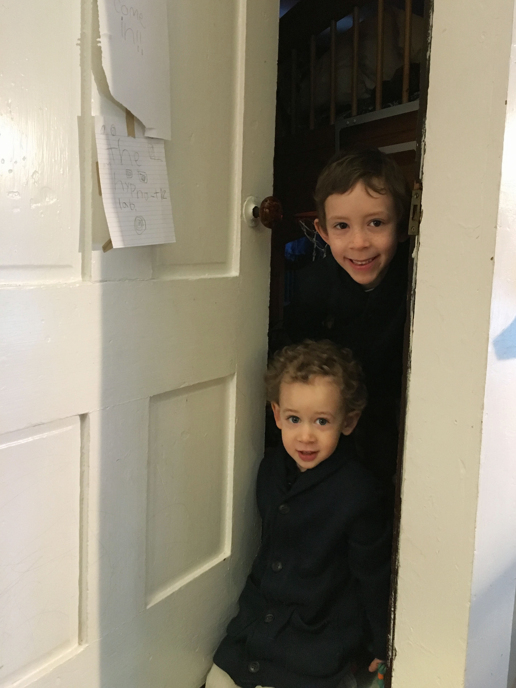

We've kind of out grown the apartment and as such we have adapted some stratedgies to deal with the challenges of close living.
This was my big take-away

We've kind of out grown the apartment and as such we have adapted some stratedgies to deal with the challenges of close living.
